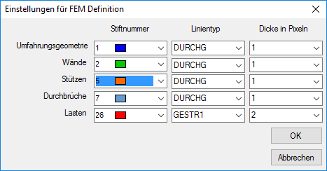

")
Darstellung der mit Finite-Elemente-Methoden erzeugten Geometrien konfigurieren. Öffnet den Dialog Einstellungen für FEM Definition.
Optionen im Dialog "Einstellungen für FEM Definition"
Konfiguration der mit Finite-Elemente-Methoden erzeugten Geometrien.
 |
Stiftnummer
Wählen Sie die Stiftnummer für die Darstellung der unterschiedlichen Elemente (Umfahrungsgeometrie, Wände, Stützen, Durchbrüche und Lasten). Da diese Darstellung nicht ausgegeben wird, kommt es hier auf die Wahl der Farbe an.
Linientyp
Stellen Sie einen geeigneten Linientyp für die Elemente ein.
Dicke in Pixel
Geben Sie die Breite der Linie in Pixel an. Die Größe der Pixel ist abhängig von der gewählten Bildschirmauflösung.

Die Änderungen werden übernommen und der Dialog geschlossen.

Alle Änderungen werden verworfen und der Dialog geschlossen.
Siehe auch: